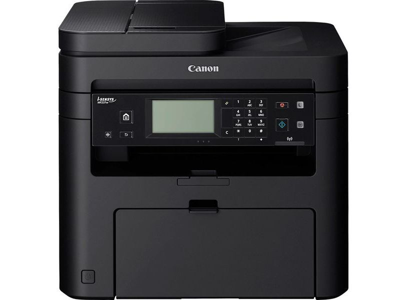
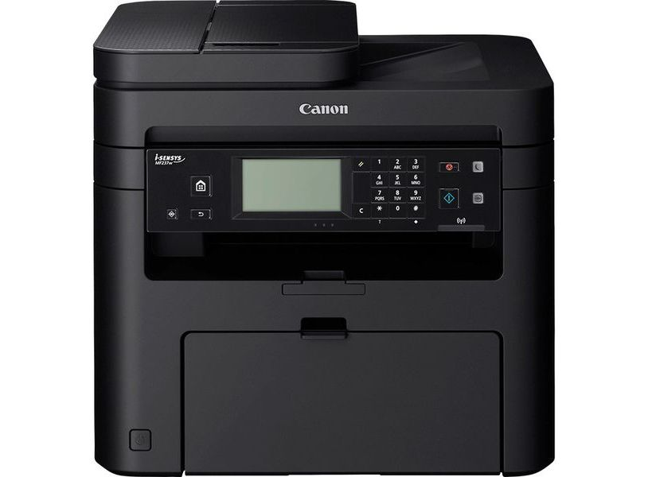

Canon MAXIFY MB5440 A4 4-in-1 Multifunction Business Wi-Fi Inkjet Printer Canon
R 3,199

 


In Stock | Nation wide | Delivery charges
SPECIFICATIONS
GENERAL FEATURES
- Display Type & Size 8.8cm colour touch screen
- Automatic Document Feeder Up to 50-sheets
- USB connection to PC : approx. 0.9 Ｗ
- Recommended Operating Environment Temperature: 15-30°C
- Recommended Print Volume 250-1500 pages / month
- Supported Operating System Chrome OS Windows 10 / 8.1 / 8 / 7 / 7 SP1 / Vista SP2
- Minimum System Requirements Windows: Internet Explorer 8, internet connection or CD-ROM
- Mac: Safari 5 and internet connection
- Network Device Setup Utility
PRINTER SPECIFICATIONS
- Print Technology Inkjet, FINE print head
- 2-Sided Printing Automatic (A4, LTR plain paper)
- Maximum Print Resolution 600 x 1200 dpi
- Print Margins (min.)Top: 3mm, Bottom: 5mm, Left & Right: 3.4mm
- Power Source AC 100-240V, 50/60Hz
SCANNER SPECIFICATIONS
- Scanner Type Flatbed, Single Pass 2-sided ADF
- Scanner Resolution (Optical)Up to 1200 x 1200 dpi
- Scan Speed (ADF) Approx. Duplex. 23 ipm Col¹
- Scan to email, Scan to network folder, Scan to Cloud, Scan to USB
- Maximum Document Size Flatbed: A4, LTR (216x297mm)
COPY SPECIFICATIONS
- ADF mono: 22.0 ipm¹
- Multiple Copy Up to 99 pages
- Double sided copying 2-sided to 2-sided (Automatic)
- Reduction / Enlargement 25-400%, Fit to Page
- Frame Erase, Collate, 2-on-1, 4-on-1, 2-sided copy
FAX SPECIFICATIONS
- Fax Type Super G3 / Colour
- Fax Resolution Mono: up to 300 x 300dpi
- Fax Speed Mono: approx. 3 sec. (33.6kbps)¹
- Paper Types Plain Paper
- Lower cassette: 250 sheets of plain paper
- Fax Memory Up to 250 pages
- Colour ink tanks (CMY) average yield: 1500 pages¹
- Ink Type Dual Resistant High Density ink 4 ink tanks (Black, Cyan, Magenta, Yellow)
| Number |
Weight |
Dimensions |
Barcode |
Warranty |
1 |
12.9kg |
463 x 394 x 351 mm |
012345730770 |
12 Months |